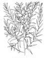
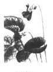
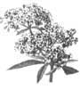

A seasonal guide to medicinal herbs
The following suggestions provide enough basic information for you to use the herbs listed here in various ways. Do not feel limited by them - the nature of herbalism is experimentation. Within the firm margins of safety, let yourself be guided by the plants and by your own instinct. Remember that herbs are potent medicines and that their use requires you to be respectful of your body and of the plants. Above all, know that wellness is one of your natural birthrites, and that healing comes from within. The plants are simply herbs, ready to guide you toward internal balance.
Last year I took willow for the first time. A fierce and unusual headache struck one day, and there was no aspirin in the house. I did, however, have ajar full of willow bark given to me by a friend. I simmered a small handful of the strips in boiling water for a few minutes. The tea tasted bitter, but I drank it anyway, a few swallows at a time. Half an hour later, singing through my household chores, I remembered my headache. The willow seemed to have worked wonders; I think it even improved my mood. Since then, I reach for willow whenever pain strikes.
Another time, black flies discovered me in the garden in the first sun after a string of wet and cloudy days. Remembering that willow is anti-inflammatory (and good for pain, too), I rubbed some freshly made tincture on the itchy, burning place. It stung for a moment and then stopped. Later, I realized I had forgotten about the bite, and when I checked it, there was no redness or swelling, and the itching was gone.
Description: A number of willow species occur in New England, and all can be used for the same purposes. Salix nigra is the traditional species for herbal use, but generally all the willows have similar compounds.
Willows may be found as shrubs or small trees, rarely exceeding 80 feet in height. The plant may have a single, central trunk that branches off; most often, it will have several trunks that sprout from the base. Willows are found mostly in moist areas and are common along waterways. Most of the willows have a distinct odor that can be noticed upon crushing the leaves or bark.
Willow leaves in general are long and lance-shaped, with a pointed tip and catkins that erupt from a scale along the branch. Seeds of the various species are generally attached to silky hairs that aid in dispersing them on the wind.
The bark of the willows ranges from gray to brown, and is aromatic and bitter-tasting. In small plants, the bark is smooth, but may become rough and furrowed in older or larger trees. Refer to plant guides for more detailed descriptions of the various species.
Medicinal uses: The willow contains salicin, a compound used as the base in the production of aspirin. Specifically, willow is anti-inflammatory and can help relieve pain and inflammation. These properties make it useful in headaches or arthritic pain. It can also be used to help reduce pain in bladder inflammations or infections. Because of its anti-inflammatory properties, willow can be used to help reduce fevers during colds or influenza. It is also helpful in some allergic reactions, such as hay fever, where it acts to reduce swelling and inflammation of membranes.
Willow is also antiseptic, and a poultice of the freshly crushed bark for twigs can be used externally for mild scratches or wounds. Varieties of poplar may be used in place of willow, as they are in the same plant family and share the same compounds.
Harvesting: Strip the bark from the tree or shrub in early spring as the new growth starts, or break off small twigs from the ends of branches. Spread the bark out to dry on screens or to other appropriate material. Bundle the twigs to hang and dry. When the plant material breaks easily, it is ready to store.
Dosages: Use 1 to 2 teaspoons of dried, shredded willow bark or twigs. Place in 1 cup of boiling water, and simmer at low heat for 10 to 15 minutes. Strain out plant material and drink three times a day.
Last year I told a friend about taking violets for coughs. Her children couldn't stand the yucky taste of some of the stronger herbs, but liked the idea of using flowers as medicine. They helped their mom with the harvesting and now, each year, they scour the fields for violets to use for "flower medicine."
Description: Violets are a common spring wildflower, and numerous species occur in our region. Their habitats vary, with some species preferring damp, rich woods and meadows, while others frequent fields and roadsides. The sweet violet, Viola odorata, is the violet of herbal tradition, but others may be used in its place with similar results.
Leaves of the species vary in shape, size, and origin of growth. Some plants have only basal leaves, while others have leaves along stems also. In species where leaves occur along stems, the leaves generally grow alternately. Leaves of most species are simple, although in a few, they are deeply lobed. Plant heights vary between two to 15 inches.
Blossoms of most species are composed of five petals. The lower petal is generally larger than the rest and has a spur at its base. The color of the blossoms ranges from white to deep lavender-blue, and some species have yellow blossoms. The flowers of some species are distinctly fragrant, while others have no noticeable scent. Violets may be found in bloom from early spring to early summer.
Medicinal uses: Violet leaves and blossoms act as an expectorant and can be used in respiratory congestion to help soften mucus and remove it from the body. A syrup of violets was often used in cough preparations where its color and mild taste, along with its action on the respiratory system, made it a good base. Violets can be used for mild bronchitis or for coughs of influenza and mild colds.
Violets also work gradually to move the metabolism towards a healthy balance. They have been used as a part of a therapy program for chronic skin conditions, such as eczema and psoriasis. Because of their antiseptic properties, violets have been used externally as a poultice for skin irritations or minor wounds. The leaves and blossoms can be added to a salve for the same problems.
Harvesting: Gather the whole plants or just the leaves and blossoms when the plant is just starting to bloom. Spread out to dry on an appropriate material. If the whole plants are harvested, turn every day or so to speed thorough drying. When crumbly, store in airtight containers.
Dosages: Make an infusion by pouring 1 cup of boiling water over 1 teaspoon of dried violet leaves and blossoms. Steep 10 minutes, then strain out plant parts. Drink three times a day. For skin conditions, crush the fresh plant, and apply directly to the area, or use dried plants in a salve.
Last year's supply of elderberry flowers went to friends for fevers, especially for their children. It made a nice, good-tasting tea, with no bitterness. I dried lots to have on hand, and used the tincture in formulas for flu and colds to help break fevers.
Description : The elderberries are tall, woody-stemmed shrubs that bear profuse white or ivory blossoms and are common to moist thickets and alongside roads. The elders are found in moist soils, and the redberried variety is often found in rocky areas. Two species of elder are used interchangeably for medicinal purposes. The common elder, Sambucus canadensis, bears tart, edible, purplish-black berries that are often used in making wild jams and jellies. The red-berried elder, Sambucus pubens, produces very acridtasting red berries that are known to be somewhat toxic, causing digestive upsets.
The leaves in both species are divided and sharply toothed. Each divided leaf is composed of five to 11 leaflets in the common elder, and five to seven in the redberried elder. All leaflets are lance- or egg-shaped and are sharply pointed.
In the common elder, flowers are tiny five-lobed blossoms that are up to 1/6" wide and fragrant. They occur in a flattened cluster at the ends of leafy branches. Clusters are from two to 10 inches wide. In the red-berried variety, flowers are fragrant, 1/4" wide, with five white or ivory petals. They occur in tall, roughly triangular clusters atop terminal branches. The red-berried variety can be found in bloom first, in spring through early summer. Common elder blooms a week or so later, in early summer.
The fruit in both species is a juicy berry. In the common elder, fruit appear as flat-topped clusters of purplish-black berries, while in the red-berried species, red berries grow in pyramid-shaped clusters.
Medicinal uses: The blossoms of both species can be used as a tea to help lower fever. The herb is diaphoretic, producing a sweat and thereby allowing the body to cool in a natural way. A tea of elderberry blossoms is useful in colds or flu when temperatures are raised. The herb is especially nice to use for children, as it makes a tasty tea that works gently.
Harvesting: Gather blossoms by cutting or breaking off the whole cluster at the stem. Spread the clusters out on screens or baskets in a shaded place with good air circulation. When dried, remove blossoms from the stems and store.
Dosages: Use 1 to 2 teaspoons of dried blossoms to 1 cup of boiling water for an infusion. Allow to steep for 10 minutes, strain out plant material, and take three times a day. Elder flowers can also be taken in a half-and-half mixture with either yarrow or peppermint, both of which are mild-tasting and have the same diaphoretic effect.
Editor's Note: Corinne Martin, a graduate of the Institute of Traditional HerbalMedicine in Santa Fe, NM, is a certified clinical herbalist who has studied plants for over a decade, achieving the rank of master herbalist. She is the author of Earthmagic: Finding and Using Medicinal Herbs (The Countryman Press, PO. Box 175, Woodstock, VT 05091; 800/245-4151).
|
 |
 |
 |
|
|
|
|